公式LINE 友だち追加・
会員登録の方法
トリイク公式LINE友だち追加から、会員登録の方法を解説します。
トリイク公式LINE 友だち追加
緑のボタンをクリック
トリイク公式WEBページの緑のボタンをクリック。もしくは以下、URLをクリック。
https://toriiku-jp.com/go-to-line →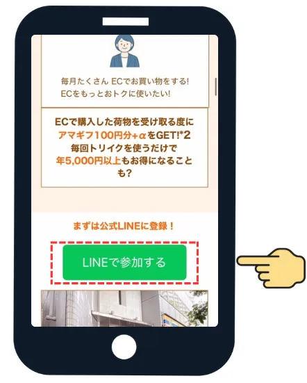
「友だち追加」をクリック
トリイク公式LINEへ画面が遷移。「友だち追加」をクリック。
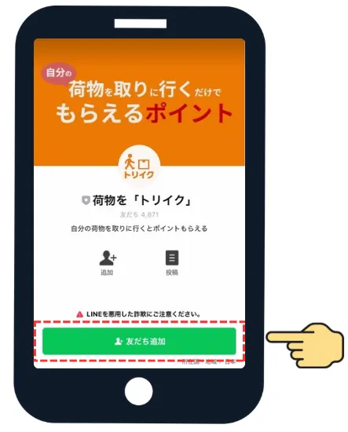
「トーク」をクリック
「トーク」をクリックの後、以下＜会員登録＞のフローの通り会員登録を実施（所要時間1分程度）。
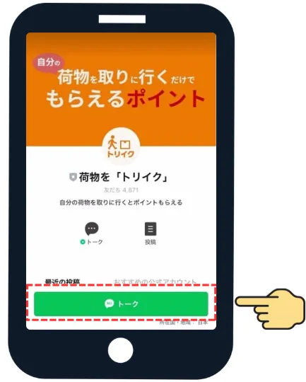
会員登録 ❶ 公式LINE上での登録 所要時間 1分程度
「会員登録 会員情報確認」をクリック
トリイク公式LINEのメニュー欄の「会員登録 会員情報確認」ボタンをクリック。

登録情報を入力
会員登録画面が表示されます。＜サービス案内＞と＜規約＞を確認し、ご自身の本名（フルネーム）、フリガナ、電話番号、メールアドレス、郵便番号、住所等を画面指示にそって入力してください。

注意事項を確認して登録
注意事項等を確認のうえ、最下段の「会員登録を行う」の緑のボタンをクリック。
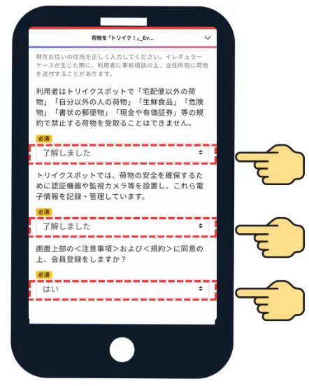
受け取る特典を選択
トリイクご利用後に受け取る特典を、「楽天ポイント」か「Amazonギフト券」のどちらかから選択します。

仮名申請（任意設問）
ネットショップに入力する（＝荷物に貼られている伝票シールに記載される）荷受人名を、本名ではなく別の名前（仮名）にしたい方は、この欄で申請をしてください。
記入後、最下段の緑のボタンをクリック。
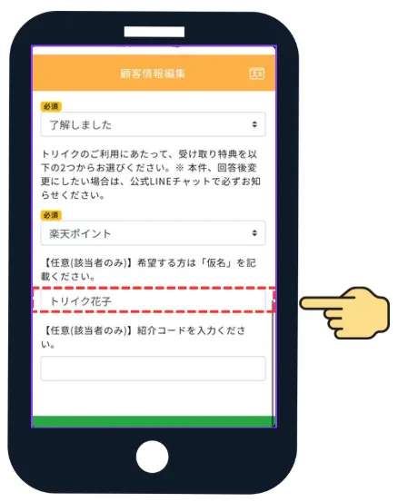
公式LINE上での登録完了
STEP 5の後、この画面が表示されれば、公式LINE上での会員登録対応は完了。
次に、オンラインでの本人確認を実施（所要時間1分程度）。登録メールアドレス宛に以下内容のメールが届きます。メール掲載URLより本人確認の登録を実施してください。
- 件名
- 【トリイク】ご本人さま確認のお願い
- 差出人
- no-reply@support.gmo-ekyc.com

会員登録 ❷ オンライン本人確認 所要時間 1分程度
メール内のURLをクリック
STEP 5～6対応の後、24時間以内に登録メールアドレス宛に届く「件名：【トリイク】ご本人さま確認のお願い」メールを開き、メール内の該当URLをクリックします。
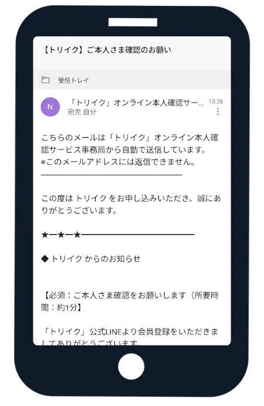
「本人確認の流れを見る」をクリック
WEBページ上の案内を確認し、「本人確認の流れを見る」をクリック。
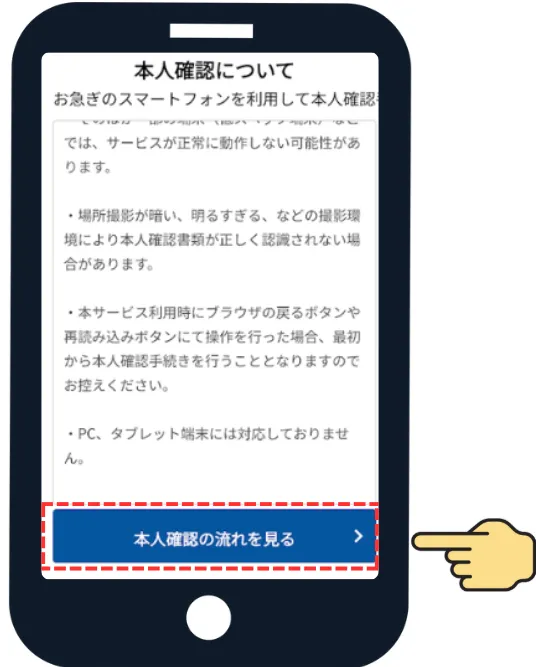
本人確認書類を選択
本人確認で使用する書類をクリックし、「決定」をクリック。
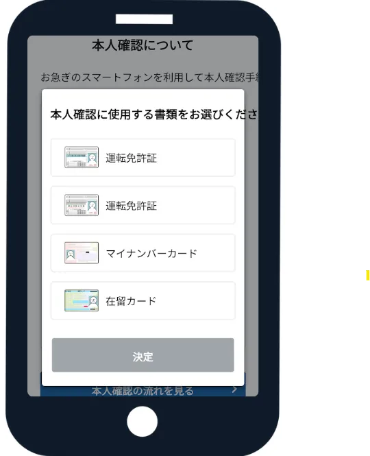
「本人確認を開始する」をクリック
本人確認の流れを確認し、「本人確認を開始する」をクリック。
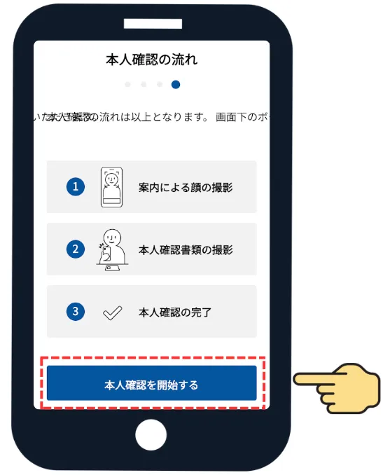
顔の撮影
案内が流れるので、案内通り顔の撮影を行います。
本人確認書類の撮影
本人確認書類をおもて面、うら面、厚みの順に撮影します。
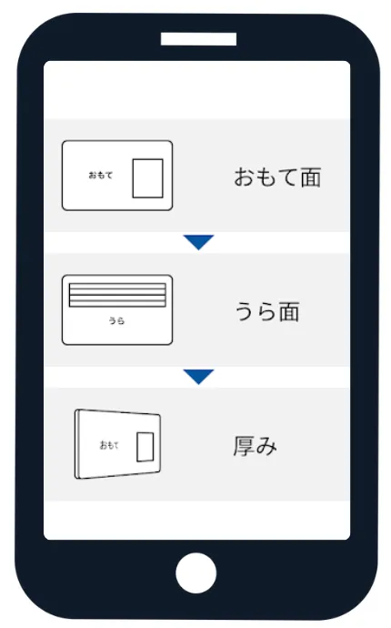
本人確認が完了
本人確認が完了します。
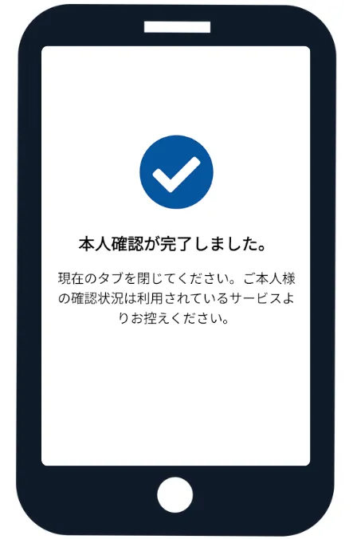
会員ランクの反映を確認
本人確認を完了した方は、24時間以内に画面の会員番号の上に「会員登録完了（本人確認済）」と表示されます。
会員登録が完了し、トリイクスポットへ入室いただける会員ランクは「会員登録完了(本人確認済)」「スタンダード」「ブロンズ」「シルバー」「ゴールド」「プラチナ」のいずれかです。
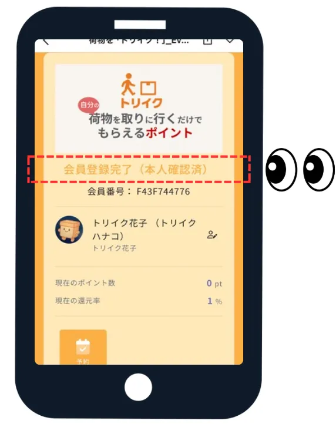
会員登録完了の確認方法
「会員登録 会員情報確認」をクリック
トリイク公式LINEのメニュー欄の「会員登録 会員情報確認」をクリック。
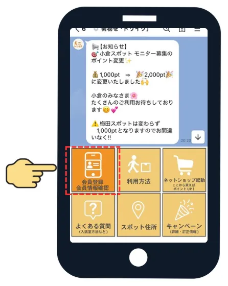
会員ランクを確認
会員ランクが 「会員登録完了(本人確認済)」「スタンダード」「ブロンズ」「シルバー」「ゴールド」「プラチナ」 のいずれかになっていれば、スポットへの入室・荷物の受け取りが可能です。
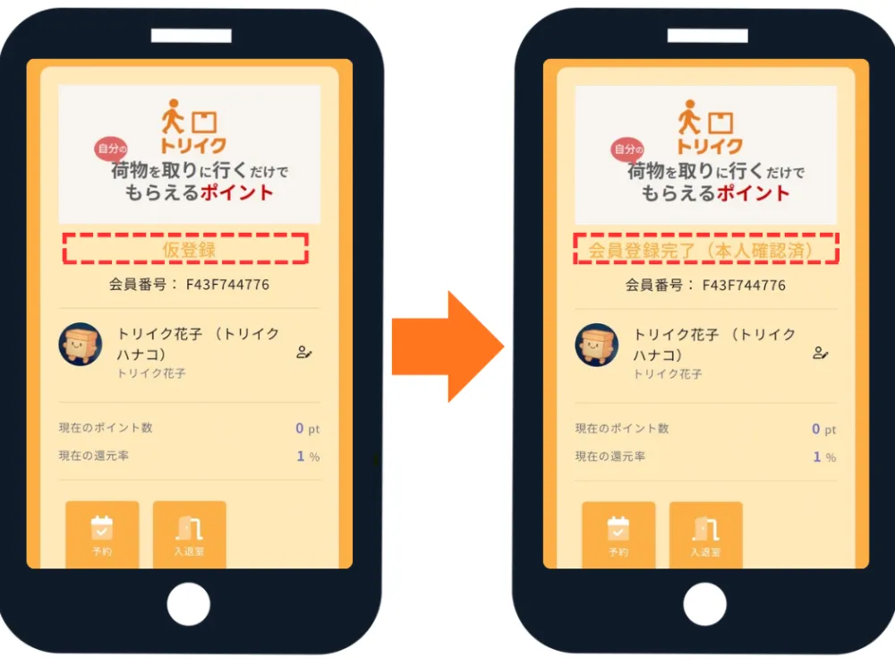
会員登録情報を変更する場合
「会員登録 会員情報確認」をクリック
LINEメニュー欄の「会員登録 会員情報確認」ボタンをクリック。

エンピツマークをクリック
名前の右横のエンピツマークをクリック。
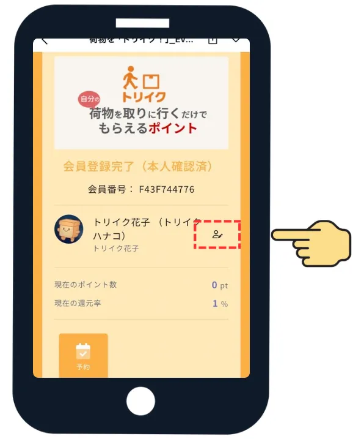
会員情報を更新
顧客情報編集画面で、修正したい情報を入力し、「会員情報を更新する」の緑のボタンをクリック。
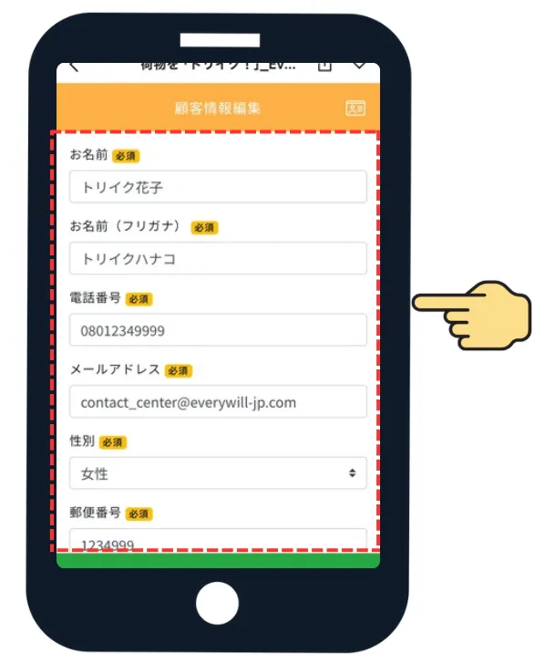
準備ができたら、いますぐ友だち追加！
 無料で会員登録
→
無料で会員登録
→